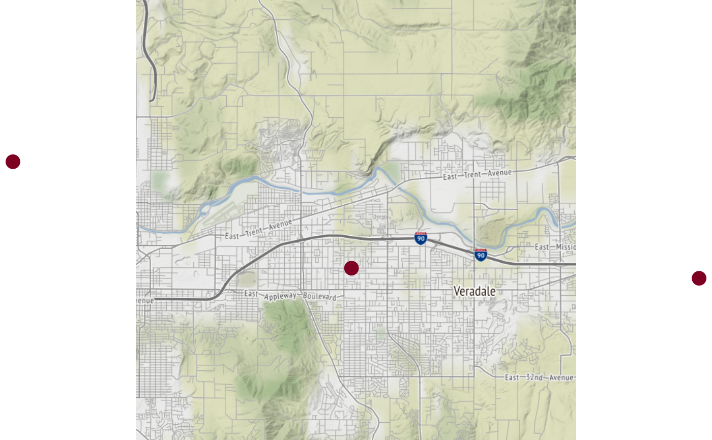

Plots amap showing ws_monitor locations and values.
#' Available maptypes include:
terrain
toner
watercolor
See staticmap_getStamenmapBrick for details.
If centerLon, centerMap or zoom are not specified,
appropriate values will be calcualted using data from the
ws_monitor$meta dataframe.
monitor_stamenmap( ws_monitor, slice = get("max"), breaks = AQI$breaks_24, colors = AQI$colors, width = 640, height = 640, centerLon = NULL, centerLat = NULL, zoom = NULL, maptype = "terrain", grayscale = FALSE, rasterBrick = NULL, cex = par("cex") * 2, pch = 16, ... )
| ws_monitor | ws_monitor object |
|---|---|
| slice | either a time index or a function used to collapse the time
axis -- defautls to |
| breaks | set of breaks used to assign colors |
| colors | a set of colors for different levels of air quality data
determined by |
| width | width of image, in pixels |
| height | height of image, in pixels |
| centerLon | map center longitude |
| centerLat | map center latitude |
| zoom | map zoom level |
| maptype | map type |
| grayscale | logical, if TRUE the colored map tile is rendered into a black & white image |
| rasterBrick | optional RGB rasterBrick object returned from
|
| cex | character expansion for points |
| pch | plotting character for points |
| ... | arguments passed on to |
Plots a map loaded from arcGIS REST with points for each monitor.
# \donttest{ library(PWFSLSmoke) N_M <- Northwest_Megafires # monitor_leaflet(N_M) # to identify Spokane monitorIDs Spokane <- monitor_subsetBy(N_M, stringr::str_detect(N_M$meta$monitorID,'^53063')) Spokane <- monitor_subset(Spokane, tlim=c(20150815, 20150831)) monitor_stamenmap(Spokane)# }